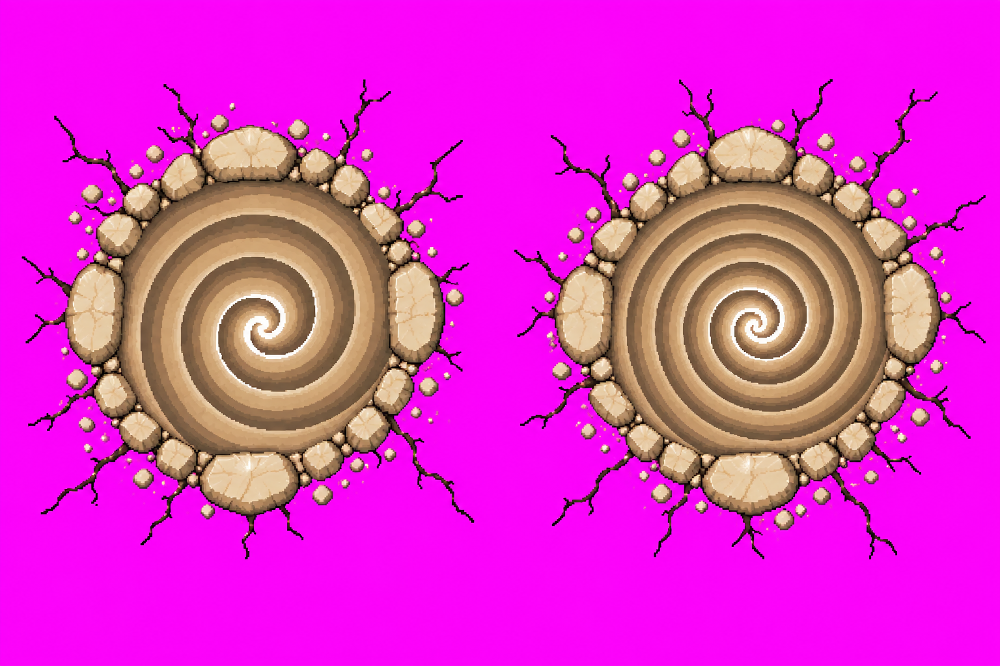
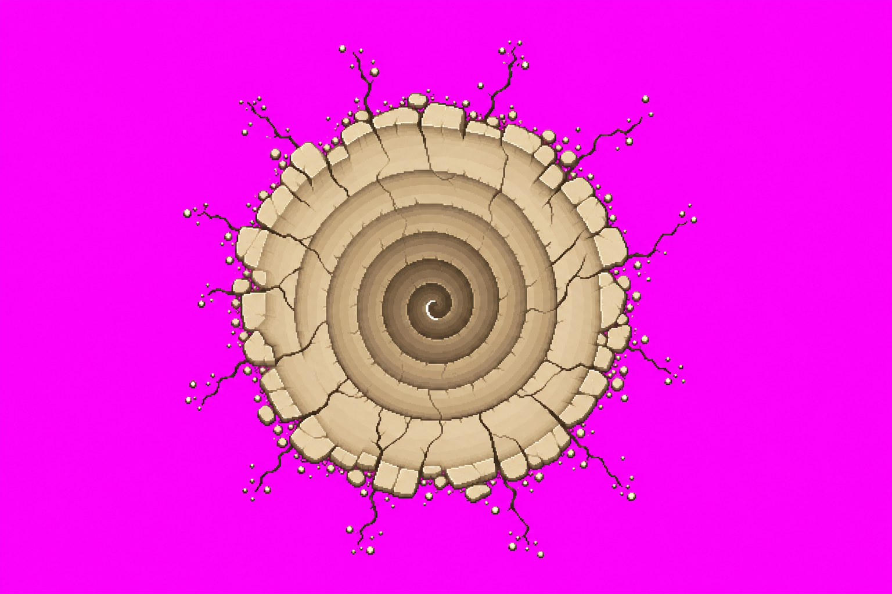
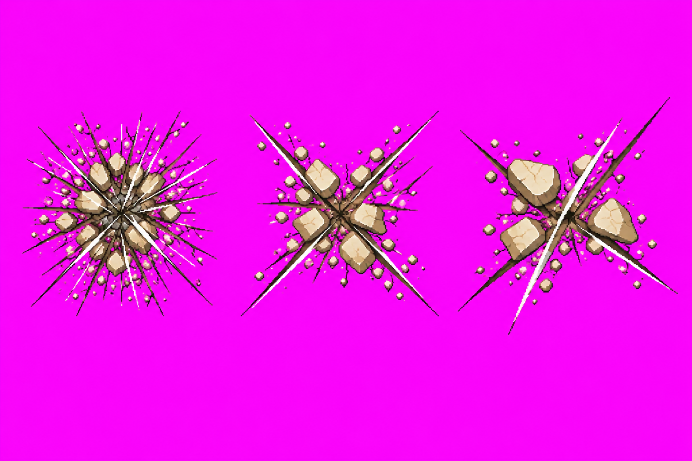
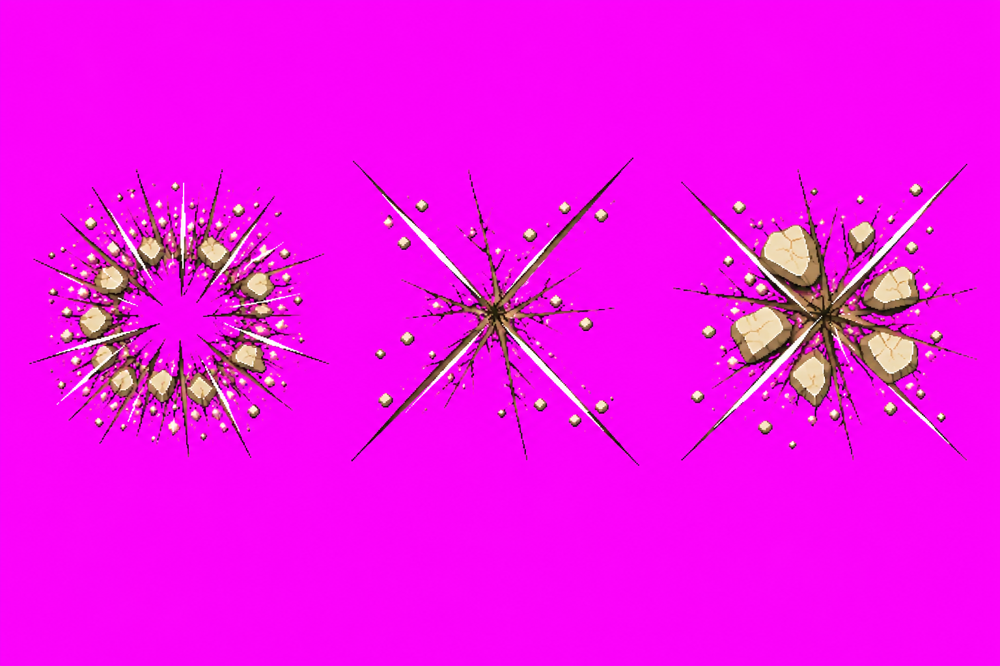
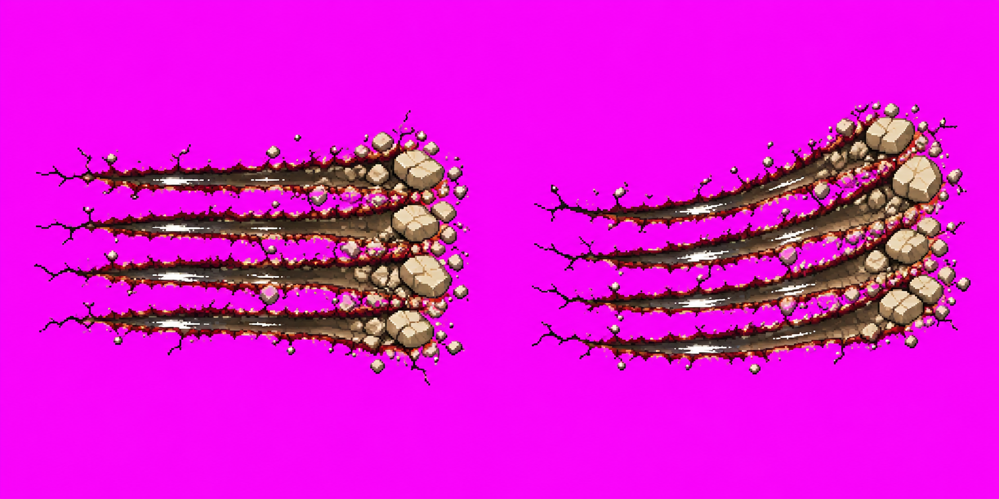
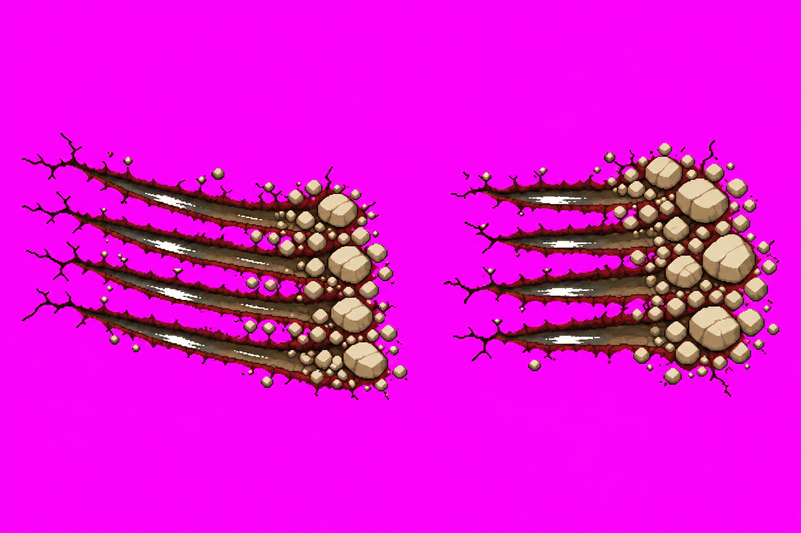
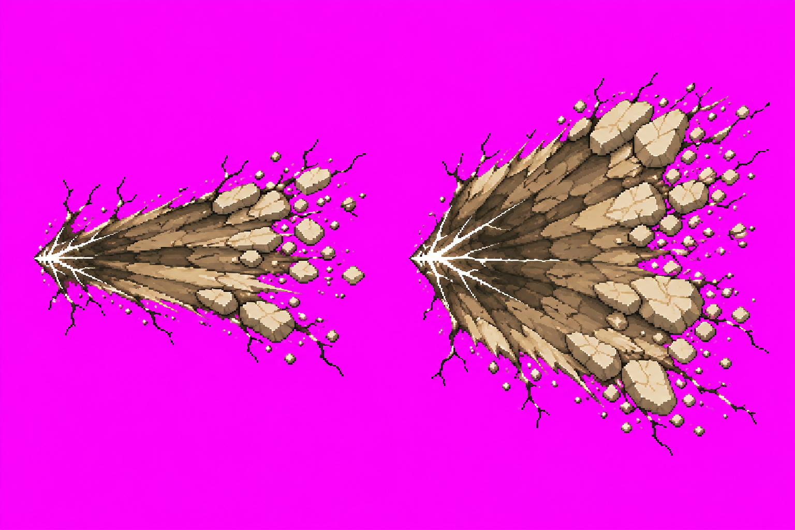
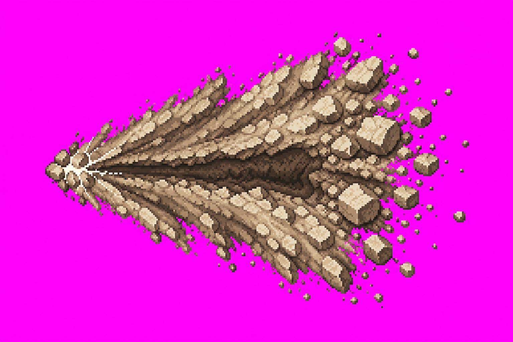
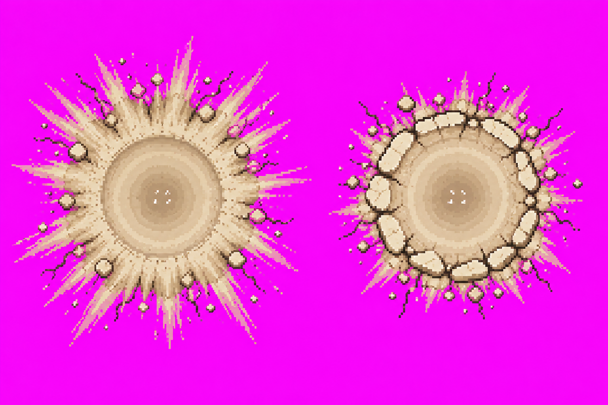
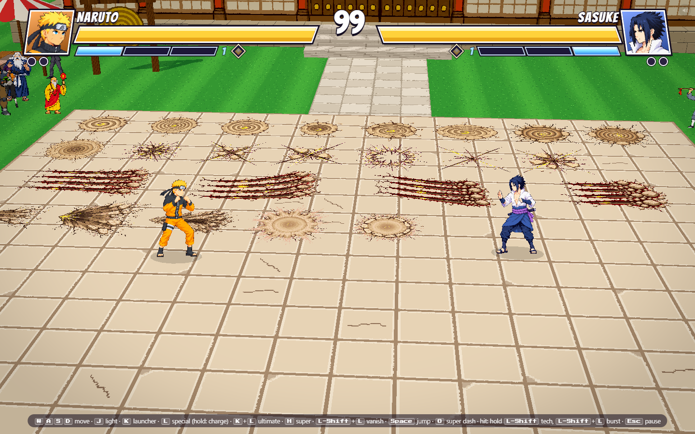

Chakra decals — candidates v01
Six names, 24 variants. No images approved. Technical pack passes with five palette warnings; recommendations below. Provisional style sheet has not been approved.
Open game · DevTools: groundDemo('chakra')
Claude must repack the combined decal atlas after integrating the separate art branches; this branch contains only chakra candidates.
scour_spiral v01
24 colors; 6 variants; no packer warning; tolerance160 sidecar. Top-down bowls and inner hot grooves read clearly; exact spiral counts approximate; mild facet-light bias remains.
Decision: approve decal scour_spiral v01, or request corrections.
Raw source images


scour_spiral_big v01
24 colors; 3 variants; 0.4% pink/purple warning; tolerance160 sidecar. Three variants present; A/B bowl and pixel density differ, spiral counts below target; recommend redraw.
Decision: approve decal scour_spiral_big v01, or request corrections.
Raw source images


cut_wind v01
24 colors; 6 variants; 2.6% pink/purple warning; tolerance160 sidecar. Six cut layouts present; cuts are heavier than hairlines, debris too raised and white seams extensive; recommend redraw.
Decision: approve decal cut_wind v01, or request corrections.
Raw source images


claw v01
24 colors; 4 variants; 1.1% pink/purple warning; tolerance160 sidecar. Four furrows each, straight/up/down/short variants, rubble right; A is 1774x887 rather than requested 1536x1024; pack normalizes cell size. Residual pink and facet bias; recommend redraw.
Decision: approve decal claw v01, or request corrections.
Raw source images


scorch_chakra v01
24 colors; 3 variants; 0.5% pink/purple warning; tolerance160 sidecar. Three left-to-right fans with origin hot seams; B texture is noisy and pixel density differs from A; recommend redraw.
Decision: approve decal scorch_chakra v01, or request corrections.
Raw source images


fracture_chakra v01
24 colors; 2 variants; 0.2% pink/purple warning; tolerance160 sidecar. Two pressure dishes and center-only white specks; residual pink on outer streaks; recommend palette correction.
Decision: approve decal fracture_chakra v01, or request corrections.
Raw source images

Local game QA
